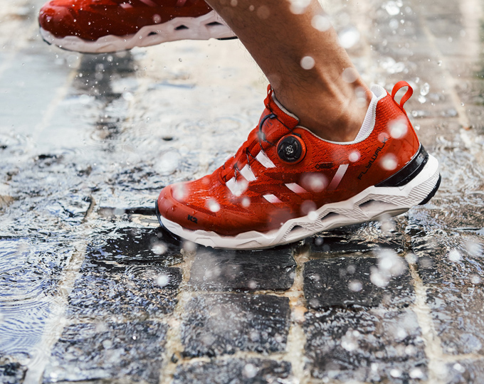
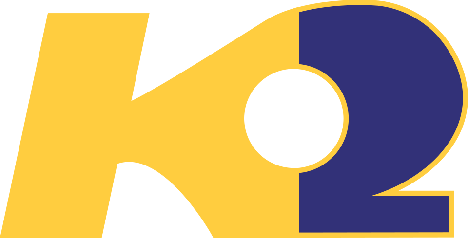

홈 > 브랜드 매거진 > K2
K2
K2(K2 Sports)는 1962년 미국에서 설립된 스키·스노보드 중심의 스포츠용품 브랜드이다.
산업 분야 스포츠·아웃도어 · 공개 등급 자료 기반 · 브랜드 평가 4.3 ★


한눈에 보는 브랜드
케이투코리아는 1972년 서울 성수동의 등산화 제조에서 출발한 토종 아웃도어 기업이다. 제화 기술자였던 선대 정동남 회장이 한국인 발에 맞는 등산화를 직접 개발했고, 1978년 세계 둘째 고봉 이름을 딴 K2 브랜드를 세웠다.
2002년 부친의 갑작스러운 별세 이후 아들 정영훈 회장이 경영을 이어받아 아이더, 다이나핏, 노르디스크, 와이드앵글, 피레티 등을 거느린 멀티브랜드 그룹으로 키웠다. 아웃도어, 골프, 산업안전화를 아우르며 신발 부문에서만 연 2천억원대 규모를 낸다.
브랜드 관점
핵심은 등산화 기술 헤리티지다. K2는 등산화 제조에서 출발한 정체성을 발판으로 노스페이스, 코오롱스포츠, 블랙야크가 각축하는 정통 미들존에서 3위권을 지킨다.
노스페이스가 단일 브랜드 1조원을 넘기며 프리미엄으로 치고 나가고 코오롱스포츠가 5천억대를 회복하는 동안, K2는 가격 대비 기능을 앞세운 중장년 충성층으로 버틴다. 둘째 차별점은 멀티브랜드 전략이다.
2006년 아이더 도입(2014년 분할), 2010년대 다이나핏 전개로 정통 K2, 감성 아이더, 마운틴 스포츠 다이나핏, 골프 와이드앵글로 가격대와 세대를 나눠 잡았다. 다만 한국 아웃도어 시장이 등산 붐 이후 침체와 재편을 거치며 그룹 외형과 수익성이 흔들린 점, 오너 승계와 배당을 둘러싼 잡음이 약점으로 지적된다.
시작과 성장
시작은 1972년 성수동의 작은 등산화 공방이었다. 구둣방을 운영하던 제화 기술자 정동남은 등산화 개념조차 낯설던 시절 외국 유명 등산화를 한 달에 여러 켤레씩 해체해 소재, 구조, 디자인을 분석했고, 그 끝에 국산 등산화를 독자 개발했다.
1978년 그는 정복하기 가장 어려운 산으로 꼽히는 8천6백11미터 K2 봉우리에서 이름을 따 브랜드를 명명했다. 1990년대 후반 아들 정영훈이 경영수업에 합류했고, 2002년 정동남 회장이 북한산에서 실족사하자 당시 전무이던 정영훈이 가업을 승계했다.
정영훈은 2002년 국내 첫 아웃도어 단독 매장을 열고 2006년 프랑스 감성 브랜드 아이더를 들여왔으며(2014년 별도 법인 분할), 2000년대 후반 등산 붐을 타고 외형을 키웠다. 이후 다이나핏을 전개하고 2021년 노르디스크를 인수하는 등 포트폴리오를 넓혀 그룹 체제를 완성했다.
브랜드 아이덴티티
브랜드 정신은 정복이 가장 까다로운 K2 봉우리에 빗댄 도전이다. 슬로건 '테크니컬 아웃도어' 아래 험한 환경을 견디는 기능성을 전면에 둔다.
로고와 브랜드명 모두 산악 정신을 직접 끌어와 강인함과 신뢰를 상징한다. 핵심 타깃은 등산과 트레킹을 즐기는 4050 이상 정통 아웃도어 소비층이며, 최근에는 배우 조인성을 모델로 세워 카리스마와 믿음직한 이미지로 구매층을 넓혔다.
목소리는 과장 없이 견고하고 실용적인 톤을 유지한다.
제품과 서비스
대표작은 등산화다. 출시 5년 만에 국산 트레킹화 최초로 밀리언셀러에 오른 플라이하이크, 충격을 분산하는 무빙에어 기술을 담은 플라이하이크 스페이스가 간판이다.
라인업은 등산화와 트레킹화, 경량부터 헤비다운까지의 다운재킷, 트레킹 의류, 안전화로 구성된다. 다운 가격대는 약 13만원대부터 50만원대 중반까지 폭넓다.
채널은 전국 직영 및 가두 매장과 백화점, 자사몰, 홈쇼핑, 온라인몰을 함께 쓴다.
현재 상태
본사는 서울에 두며 정영훈 회장이 그룹을, 케이투코리아 법인 대표도 정영훈이 맡는다. 케이투코리아 단일 법인의 2024년 매출은 약 3천7백43억원으로 집계됐고, 회사는 길어진 더위와 핵심 구매층 공략을 내세워 4천2백억원대 목표를 제시했다.
다만 2025년에는 시장 침체를 감안해 전년 대비 6%의 보수적 성장 목표를 잡았다. 그룹 전체 합산 매출과 영업이익 등 세부 경영지표는 외부에 공식 공개되지 않았다.
계열 아이더는 2025년 약 2천2백31억원으로 역성장했으며, 다이나핏은 인적분할로 별도 법인 다이나핏코리아 체제로 운영된다.
타임라인
BI/CI 변천사
함께 읽을 브랜드
노스페이스(The North Face)는 1966년 미국에서 창립한 VF 코퍼레이션 산하의 아웃도어 의류·장비 브랜드이다.
 스포츠·아웃도어 · 자료 기반블랙야크
스포츠·아웃도어 · 자료 기반블랙야크블랙야크(BLACKYAK)는 BYN블랙야크가 운영하는 대한민국의 아웃도어 브랜드다. 1973년 등산용품점 '동진'에서 출발한 그룹이 1995년 '블랙야크' 브랜드를...
 스포츠·아웃도어 · 자료 기반코오롱스포츠
스포츠·아웃도어 · 자료 기반코오롱스포츠코오롱스포츠(KOLON SPORT)는 코오롱인더스트리 FnC부문이 운영하는 대한민국의 아웃도어 브랜드다. 1973년 창립한 국내 1세대 아웃도어로, 고기능성 등산·아...
EI
아이더
스포츠·아웃도어 · 자료 기반아이더아이더(EIDER)는 1962년 프랑스에서 설립돼 현재 한국 K2코리아가 전개·보유한 아웃도어 브랜드다.
 스포츠·아웃도어 · 자료 기반Marathon Sports
스포츠·아웃도어 · 자료 기반Marathon Sports마라톤 스포츠(Marathon Sports)는 1980년 에콰도르에서 시작한 스포츠용품 소매 체인이다. 에콰도르를 대표하는 멀티브랜드 스포츠용품 소매업체다.
 스포츠·아웃도어 · 편집 검수뉴발란스
스포츠·아웃도어 · 편집 검수뉴발란스뉴발란스(New Balance)는 미국 보스턴에 기반을 둔 비상장 운동화·스포츠 의류 기업이다.
리복(Reebok)은 영국 볼턴에서 시작된 운동화·스포츠 의류 브랜드이다.
 스포츠·아웃도어 · 편집 검수파타고니아
스포츠·아웃도어 · 편집 검수파타고니아파타고니아는 아웃도어 브랜드이면서 동시에 소비를 줄이라는 역설적 메시지로 신뢰를 쌓은 브랜드다. 제품을 파는 기업이지만 브랜드의 설득력은 자연, 책임, 오래 쓰는 태...